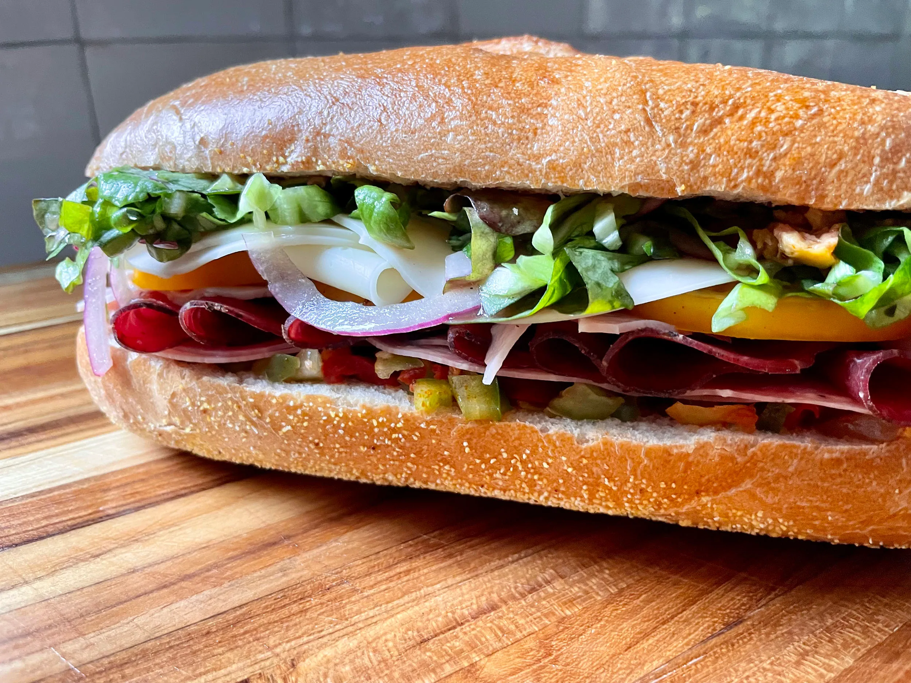

Itaian Sandwich

Discription
This is an Italian sandwich sub with three kinds of meat and provolone cheese. The kind you get in a mom-and-pop pizza joint. You'll be glad you tried it!
Ingredients
- 1 head red leaf lettuce, rinsed and torn
- 2 medium fresh tomatos, chopped
- 1 medium red onion, chopped
- 6 tablespoons white wine vinegar
- 2 tablespoons chopped fresh parsley
- 2 cloves garlic, chopped
- 1 teasoon dried basil
- 1/4 teaspoon red pepper flakes
- 1 pinch dried oregano
- 1/2 pound sliced Capacola sausage
- 1/2 pound thinly sliced Genoa salami
- 1/4 pound thinly sliced prosciutto
- 1/2 pound sliced provolone cheese
- 4 submarine rolls, split
- 1 cup dill pickle slices
Instructions
- Combine lettuce, tomatoes, and onion in a large bowl.
- Whisk together olive oil, vinegar, parsley, garlic, basil, red pepper flakes, and oregano in a medium bowl until well combined. Pour over salad and toss to coat evenly. Place in the refrigerator for flavors to meld, about 1 hour.
- Spread submarine rolls open, then layer capicola, salami, and prosciutto evenly on each roll. Top with provolone cheese. Cover with salad and pickle slices. Close rolls to serve.